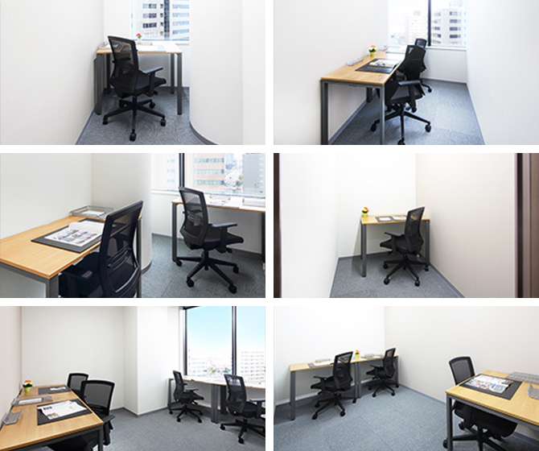

【個室レンタルオフィス】
オープンオフィス新潟
オープンオフィス新潟がNEW OPEN
オープンオフィス新潟は、新潟経済の中心として、新潟市役所や、大手企業の新潟支店、営業所が集中するビジネス街の古町エリア、メインストリートである柾谷小路に面したストークビル鏡橋の7階に位置します。
オープンオフィス新潟が提供するオフィスサービス
-
 高速インターネット＜光ファイバー＞
高速インターネット＜光ファイバー＞
- 100Mbpsの光ファイバーによるブロードバンド環境をご用意しました。各部屋に配線済みですので、パソコンに繋げばすぐLAN経由で高速インターネットを利用出来ます。
-
 ネットワーク・カラーレーザープリンタ+スキャナー
ネットワーク・カラーレーザープリンタ+スキャナー
- ネットワークを利用して、各お部屋のパソコンから印刷できます。プリンタをご用意いただく必要もございません。
スキャナー機能も搭載しております。
-
 カラーレーザーコピー
カラーレーザーコピー
- フロア内にご用意してあります。カード方式でコピーが出来ますので、小銭の準備が不要です。
-
 ICカードキーによる入室管理
ICカードキーによる入室管理
- 専用ICカードを使ったホテル式のスマートシステムを用いて、セキュリティーを向上させています。
-
 ミーティングルーム（会議室）
ミーティングルーム（会議室）
- 商談・会議にご利用いただける共有スペースをご用意しています。インターネットで簡単に予約をしていただけます。
-
 無線LAN（WiFi）
無線LAN（WiFi）
- 共有スペースとミーティングスペースにて、無線LAN(WiFi)サービスをご利用いただけます。

オープンオフィス新潟の特徴

北信越の統括拠点に最適
新潟市の中心、古町エリア
ポテンシャルを秘めたベンチャー都市
メインストリート、柾谷小路に面す好立地
24時間利用可能
オフィス周辺のMap
オープンオフィス新潟近隣のスポット
- ■銀行
- 第四銀行 本店
三菱東京UFJ銀行 新潟支店
三井住友銀行 新潟支店
みずほ銀行 新潟支店
北越銀行 古町支店
東邦銀行 新潟支店 - ■レストラン
- 雪屋（寿司）
あづま（ステーキ）
静香庵（フレンチ 鉄板焼き）
ジミーズキッチン（イタリアン）
兄弟寿し（寿司懐石） - ■ホテル
- ホテル日航 新潟
ANAクラウンプラザホテル 新潟
ホテルオークラ 新潟
ホテルメッツ 新潟
万代シルバーホテル - ■レジャー
- スポーツクラブNAS新潟
コナミスポーツクラブ新潟
セントラルフィットネスクラブNEXT21
- ■映画館
- T・ジョイ新潟万代
オープンオフィス新潟の住所・アクセス
- 住所:
- 新潟県新潟市中央区上大川前通七番町1230-7 ストークビル鏡橋 7F
- 空港からのアクセス:
- 新潟駅南口から直通リムジンバスで新潟空港まで約25分
- 電車からのアクセス:
- 新潟駅からタクシーで約5分
新潟駅からバス「本町」バス停まで約6分 「本町」バス停より徒歩1分 - お車でのアクセス:
- 柾谷小路（万代橋通り・国道7号線、116号線）「鏡橋」交差点角
オープンオフィス新潟のフロアマップ
7F

※フロア内は禁煙です。
※こちらはイメージ図となりますので、状況が異なる場合は現況を優先させていただきます。
- ◆初回納入金
- 利用料1ヶ月分の保証金
- ◆共益費
- 水道光熱費、ビル共益費、ゴミ出し、フロア・トイレの清掃、共有部分の消耗品代を含みます。
リージャスグループの説明
リージャス・グループは、柔軟なワークスペースを提供する世界最大の企業です。そのネットワークは世界120カ国1,100都市、3300拠点に及びます。会員数は250万人で、業界で成功を収める大小様々な企業や起業家の方々にご利用いただいています。
リージャスは、個室タイプのレンタルオフィス、コワーキングスペースなど多彩なオフィスプラン、近年需要が高まるモバイルワークやバーチャルオフィス、障害復旧サービスの提供を通じ、お客様が予算やワークスタイルに合わせて仕事を行うことができる環境を提供いたします。